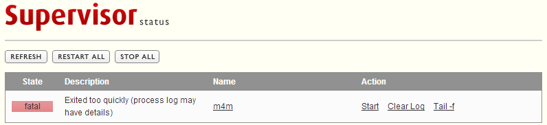
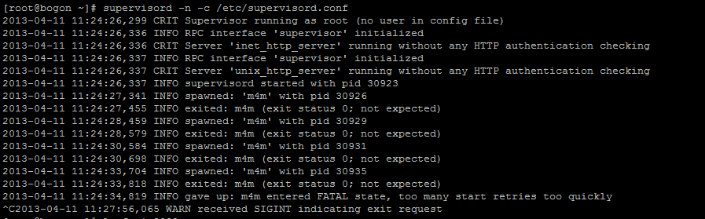

这里主要说一下在使用supervisor遇到的两个问题
下面是supervisord的配置信息
[unix_http_server] file=/tmp/supervisor.sock ; (the path to the socket file) [inet_http_server] ; inet (TCP) server disabled by default port=:9001 ; (ip_address:port specifier, *:port for all iface) [supervisord] logfile=/tmp/supervisord.log ; (main log file;default $CWD/supervisord.log) logfile_maxbytes=50MB ; (max main logfile bytes b4 rotation;default 50MB) logfile_backups=10 ; (num of main logfile rotation backups;default 10) loglevel=info ; (log level;default info; others: debug,warn,trace) pidfile=/tmp/supervisord.pid ; (supervisord pidfile;default supervisord.pid) nodaemon=false ; (start in foreground if true;default false) minfds=1024 ; (min. avail startup file descriptors;default 1024) minprocs=200 ; (min. avail process descriptors;default 200) [rpcinterface:supervisor] supervisor.rpcinterface_factory = supervisor.rpcinterface:make_main_rpcinterface [supervisorctl] serverurl=unix:///tmp/supervisor.sock ; use a unix:// URL for a unix socket [program:m4m] command= spawn-fcgi -a 127.0.0.1 -p 9002 -f ./program.py -d /root/iPPS_20130411/m4m ; the program (relative uses PATH, can take args) umask=022 ; umask for process (default None) autostart=true ; start at supervisord start (default: true) startsecs= 1 ; number of secs prog must stay running (def. 1) startretries=3 ; max # of serial start failures (default 3) stdout_logfile=/tmp/m4m ; stdout log path, NONE for none; default AUTO stdout_logfile_maxbytes=1MB ; max # logfile bytes b4 rotation (default 50MB) stdout_logfile_backups=10 ; # of stdout logfile backups (default 10) stdout_capture_maxbytes=1MB ; number of bytes in 'capturemode' (default 0) stdout_events_enabled=false ; emit events on stdout writes (default false) stderr_logfile=/tmp/m4m ; stderr log path, NONE for none; default AUTO
通过 supervisord -c /etc/supervisord.conf, 启动supervisord， 然后在浏览器中输入 http://127.0.0.1:9001查看进程运行情况

尝试运行自己的网站http://172.16.35.97， 网站可以正常访问。
运行supervisord -n -c /etc/supervisord.conf显示信息如下：(too many start retries too quickly)

解决方法： 查询supervisord的文档， 发现有一个 ‘startsecs’ 参数，这个参数官方是这么说的 The total number of seconds which the program needs to stay running after a startup to consider the start successful。 也就是说程序启动后多少秒是running状态，那么就认为是成功。把这个参数设置为 0(表示不需要核对这个running时间) 解决该问题。
错误现象
尝试运行自己的网站http://172.16.35.97， 网站可以正常访问。
通过这里的介绍
Programs meant to be run under supervisor should not daemonize themselves. Instead, they should run in the foreground. They should not detach from the terminal from which they are started.(supervisor管理的进程不能为守护进程)
解决方法： 修改 command= spawn-fcgi -a 127.0.0.1 -p 9002 -f ./program.py -d /root/iPPS_20130411/m4m 为 command= spawn-fcgi -a 127.0.0.1 -p 9002 -f ./program.py -d /root/iPPS_20130411/m4m -n